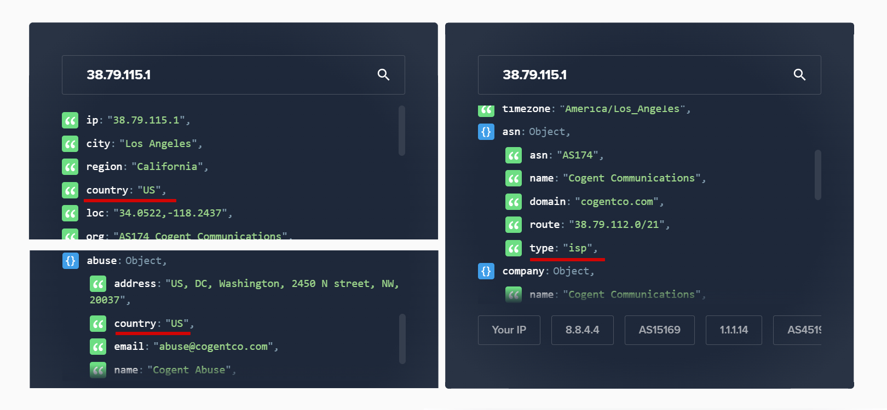
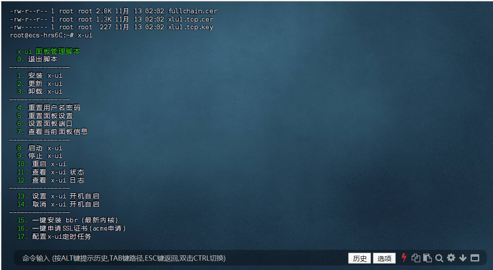
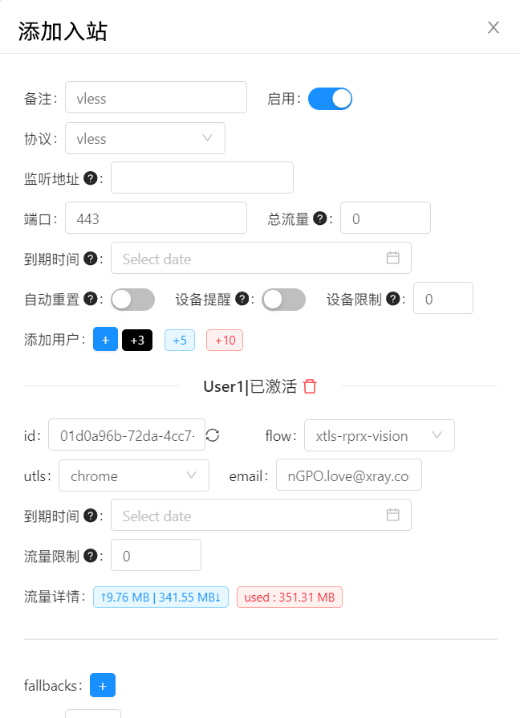
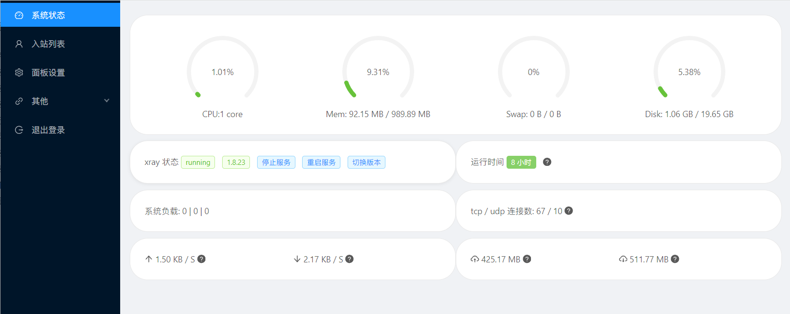

🕓2024年11月15日
视频教程：▶https://youtu.be/JXj8NHjdmzc
前言
许多小伙伴刚接触跨境这块时，都会倾向于去选择一些性价比较高的共享VPN，例如：机场节点、共享节点梯子等。如果你是单纯用来浏览资讯新闻，刷刷tiktok、facebook、youtube等一类社交媒体，这些便宜的机场节点基本能满足需求。但如果你是从事跨境电商、社媒、短视频运营等，共享VPN恰恰会成为你成功路上最大的绊脚石！相信从事affiliate、tiktok运营的小伙伴都已经深有体会。自己辛苦做出来的账号突然永久被封、账户资金无法提现、银行账户被冻结等等，这些问题，大概率是由于网络节点造成的！
所以回到原点，
最最核心的还是需要一个位于国外、不会变的、只属于你的IP节点。
第一性原理，最靠谱的方法就是，直接在你需要的tiktok区，购买一个当地国家的服务器，利用服务器搭建一个节点，通过这个节点访问tiktok，算法就很难检测出来你的真身是在其他地方。
而目前市面上大部分的 Tiktok节点 服务商，只是告诉了你他们提供的节点的区，但究竟是机场IP还是独享IP，很难判断，并不像自己搭建这样一目了然。
IP方面：
什么是原生IP？简单来说，IP所在地与注册地一致即为原生IP，通常指的是直接从互联网服务提供商获得的IP地址，而不是通过代理服务器或VPN等其他方式获得的IP地址，区别于广播IP。
IP类型可分为ISP、business、hosting，ISP为住宅IP，business是商业IP，hosting则为机房IP。 跨境运营，建议使用原生住宅(ISP)IP。
这里提供网址：https://ipinfo.io，可以检测IP的类型以及是否原生。 如下图所示，俩处的country一致为原生IP，不一致则非原生。type处显示该IP的类型。

以上是六六云VPS服务商提供的测试节点，支持跨境电商、社媒、Tiktok 运营。
六六云主机的优势：
双ISP原生住宅IP：一般市面上提供ISP的VPS都只有单ISP，而六六云主机提供的双ISP具有更好的网络稳定性和可靠性，并增加带宽和速度。
全流媒体解锁：tk(tiktok)、油管(YouTube)、脸书(Facebook/Meta)、推特(Twitter)、奈飞(Netflix)、迪士尼(Disney)等等各大流媒体及社交媒体平台都能畅通访问。
IP纯净：IP干净无污染，与黑名单说拜拜。
支持48小时内退款，以下单时间为准。
VPS注册网址：https://666clouds.com/aff.php?aff=491
如何在VPS上搭建独享VPN节点？
一、准备工作
1、域名一个:推荐在 Namesilo 进行购买（新用户1美元优惠券：kejixiaolu），因为他的 WHOIS 隐私 是免费的，可以适当的进行一下隐私保护，而且域名还都挺便宜的。（域名可以在 Namesilo 解析，也可以将域名托管到 Cloudflare ，解析更快。）
检测服务器IP是否被封，确认IP可用。
已经解析的域名，Win+R 输入 CMD 回车：键入ping 空格输入你的域名，检查一下是否可以 ping 通。
2、一台境外 VPS 主流系统。
例如：Debian 8+ / Ubuntu 16+ / CentOS 7+
六六云VPS注册网址：https://666clouds.com/aff.php?aff=491 （双ISP，支持tiktok）
Vultr 注册网址：https://www.vultr.com/?ref=9554306
（按时计费，最低6$/月。）
3、下载并安装 FinalShell SSH 工具
Windows 版下载地址>>点此下载
macOS 版下载地址>>点此下载
二、安装 X-ui 面板
更新及安装组件。下面环境的安装方式，大家根据自己的系统选择命令安装就好了。
1、Debian/Ubuntu系统执行以下命令：
复制 apt update -y && apt install -y curl && apt install -y socat
2、CentOS系统执行以下命令：
复制 yum update -y && yum update -y && yum install -y socat
复制 curl https://get.acme.sh | sh
申请 SSL 证书
80 端口空闲的证书申请方式
自行更换代码中的域名、邮箱为你解析的域名及邮箱
复制 ~/.acme.sh/acme.sh --register-account -m xxxx@gmail.com
复制 ~/.acme.sh/acme.sh --issue -d 输入你的域名 --standalone
下载证书及密钥
安装证书到指定文件夹，
自行更换代码中的域名为你解析的域名
复制 ~/.acme.sh/acme.sh --installcert -d 输入你的域名 --key-file /root/private.key --fullchain-file /root/cert.crt
安装&升级X-ui面板一键脚本
复制 bash <(curl -Ls https://raw.githubusercontent.com/FranzKafkaYu/x-ui/master/install.sh)
三、X-ui 面板登录
登陆面板：在浏览器内输入http://服务器IP或域名:端口进入登录页面
默认情况下端口为54321,登录账号为admin,密码为admin
在安装/更新时都会提示对账户/密码进行修改，若不修改，则为默认值或与之前设定保持一致
面板登录时，会自动判断面板后台是否完成证书相关设置，若已设置，则会开启Https登录；若未设置，则为Http登录
由于Http无任何加密，为了保证你的面板与节点安全，推荐大家开启Https登录
如果你是初次安装，第一次登录面板后进入面板设置会自动生成根路径并重启面板。此时会出现page not found 404错误，可以进入服务器里通过x-ui命令进入快捷菜单，键入数字7查看生成的面板根路径，之后重新在浏览器输入ip(域名):端口+根路径进行登录。举例如下：
初次登录：http://1.2.3.4:443, 登录后进入面板设置页面，此时将会生成新的根路径
后续登录: 进入服务器查看生成的根路径，如为/GH89/,则新的登录路径为 http://1.2.3.4:443/GH89/

节点配置
搭建节点如果不能上网，记得要放行节点端口。

节点配置及功能方面，请看 视频教程
恭喜你，一个域名和服务器都完全由你自己命名的独享原生IP诞生了!
不要分享给任何人。Tiktok前期还是需要保证一机一IP节点的。
四、各平台客户端
v2rayNG【需要最新版本】
Windows（v2rayN）：https://github.com/2dust/v2rayN/releases/tag/6.23
Android（v2rayNG）：https://github.com/2dust/v2rayNG/releases/tag/1.8.5
IOS（shadowrocket）：https://apps.apple.com/app/shadowrocket/id932747118
五、 BBR2加速
本脚本建议在Debian≥9或是CentOS≥8以上的系统中使用
复制
echo "net.core.default_qdisc=fq" >> /etc/sysctl.conf
echo "net.ipv4.tcp_congestion_control=bbr" >> /etc/sysctl.conf
sysctl -p
lsmod | grep bbr
六、放行端口指令
放行指令是一样的，只要将端口443为任意端口就可以了。
放行 443 端口指令：
复制 iptables -I INPUT -p tcp --dport 443 -j ACCEPT
放行 54321 端口指令：
复制 iptables -I INPUT -p tcp --dport 54321 -j ACCEPT
设置手机环境和app，连接节点
还原iphone之后，手机环境设置:
1.手机语言设置为English;
2.
更改手机时区:Settings-General-Date&Time-自动时区设置关闭，手动设置时区(根据节点的时区
3 .
地区设置:Settings- General- Language&Region - 设置tiktok的运营国家
4.关闭定位服务:Settings-Privacy & Security-Location Services->off
5.
关闭app跟踪:Settings-Privacy&Security-Tracking->off
连接节点IP，保证whoer检测100%
打fwhoer.net,
检查伪装度和时区
打开bgp.he.net，再次检查是否为原生IP。
首先打开bgp.he.net ，自己的服务器，肯定都知道机房位置的，所以我们要做的就是看下这个IP的
whois信息中的地区/国家与你机房的位置是否一致。
或者打开ipinfo.io，检测IP的类型以及是否原生。
全部确定ok之后，才能首次在手机上打开Tiktok。
检测端口是否被封
端口被封的原因是多方面的，目前并没有哪一种节点可以保证不被封，本期讲的这三种方式也不例外，所以如果你的节点突然无法使用了，可以用以下方式进行排查。
打开 ping.pe
输入 IP 检测 ping 可用
输入 IP:Port 检查端口是否可用
主要是看最后几个是否为绿色
X-ui 面板特点
